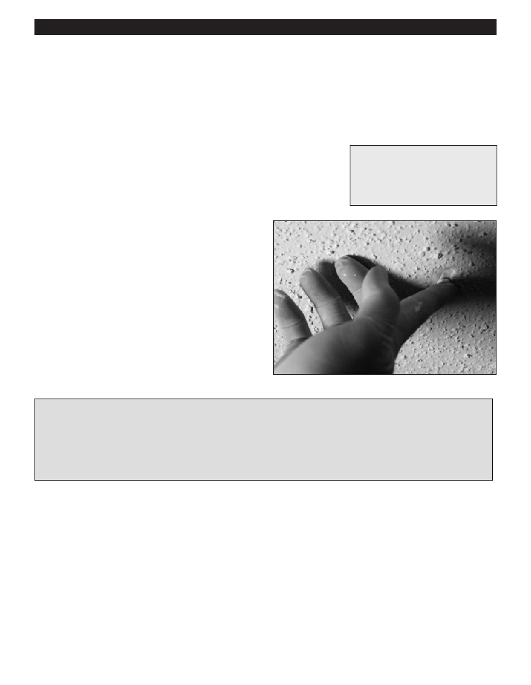

PA RT I C I PA N T R E S O U R C E G U I D E
Ceilings and Walls:
Repairing Cracked Popcorn Ceilings
If a popcorn ceiling has cracks, you can repair them with a patching compound designed
for textured ceilings.
Safety
Tools and Materials Needed
Wear eye protection.
Putty knife
Be careful using ladders and putty knives.
Textured patching compound
Paintbrush
How-to Steps
1. Scrape around the cracks with a putty knife.
2. Use a paintbrush to clean off any dust.
3. Apply the patching compound by dabbing it onto the
ceiling with a small paintbrush or your finger. Use only a
small amount of compound.
Tips
In corners where the textured ceiling meets a smooth wall, wedge a large flat object (such as a broad knife) into the
corner to prevent the patching compound from getting on the wall.
Fix large cracks with joint compound before using the textured patching compound.
If the ceiling has water damage, apply a coat of primer or sealer before using the patching compound.
Notes:
22